import sys, pathlib
sys.path.insert(0, str(pathlib.Path("_includes").resolve()))
from setup import configure_warnings, ensure_matplotlib_initialized
ensure_matplotlib_initialized()
configure_warnings()
import numpy as np
import pandas as pd
import scranpy
import ggnomics as gg
from plotnine import theme_bw, theme, labs, facet_wrap, scale_color_gradient, element_text, coord_fixedSingle-cell analysis with scranpy
A full QC-to-UMAP workflow on the Zeisel mouse brain dataset
This workflow follows the Zeisel et al. (2015) mouse brain dataset through quality control, normalization, feature selection, PCA, graph-based clustering, and UMAP. The analysis uses scranpy with the full dataset (20,006 genes and 3,005 cells), and ggnomics for visualization. For a shorter introduction based on a subset of these cells, see Getting started.
1. Fetching and inspecting the SCE
from data import load_zeisel_full
sce = load_zeisel_full()
sce.shape(20006, 3005)sce.get_assay_names()['counts']sce.get_column_data().get_column_names()Names(['tissue', 'group #', 'total mRNA mol', 'well', 'sex', 'age', 'diameter', 'level1class', 'level2class'])sce.get_alternative_experiment_names()['repeat', 'ERCC']The object contains two alternative experiments, repeat and ERCC (spike-in) features. The analysis below uses the main 20,006-gene assay.
2. A mitochondrial-gene mask from verified row names
Mouse mitochondrial genes conventionally carry an mt- prefix. We derive the QC subset directly from the row names:
row_names = sce.get_row_names()
mito_genes = [g for g in row_names if str(g).lower().startswith("mt-")]
len(mito_genes), mito_genes[:5](34, ['mt-Tl1', 'mt-Tn', 'mt-Tr', 'mt-Tq', 'mt-Ty'])mito_mask = [str(g).lower().startswith("mt-") for g in row_names]3. RNA QC metrics and cell filtering
scranpy.compute_rna_qc_metrics computes per-cell library size (sum), number of detected genes (detected), and the mitochondrial proportion for the mito subset we just defined; suggest_rna_qc_thresholds derives outlier thresholds (median absolute deviation-based, scran-style) and filter_rna_qc_metrics turns them into a boolean keep-mask:
qc = scranpy.compute_rna_qc_metrics(sce.get_assay("counts"), subsets={"mito": mito_mask})
qc_df = qc.to_pandas()
qc_df.describe()| sum | detected | subset_proportion.mito | |
|---|---|---|---|
| count | 3005.000000 | 3005.000000 | 3005.000000 |
| mean | 14954.194343 | 3776.732113 | 0.079560 |
| std | 9267.942024 | 1576.251293 | 0.060633 |
| min | 2574.000000 | 785.000000 | 0.000000 |
| 25% | 8130.000000 | 2484.000000 | 0.039921 |
| 50% | 12913.000000 | 3656.000000 | 0.066528 |
| 75% | 19284.000000 | 4929.000000 | 0.102898 |
| max | 63505.000000 | 8167.000000 | 0.569549 |
thresholds = scranpy.suggest_rna_qc_thresholds(qc)
keep = scranpy.filter_rna_qc_metrics(thresholds, qc)
f"{keep.sum()} / {len(keep)} cells retained"'2874 / 3005 cells retained'Plotting the QC metrics with plot_coldata, colored by whether a cell passed filtering:
qc_plot_df = qc_df.copy()
qc_plot_df["status"] = np.where(keep, "kept", "filtered")
(
gg.plot_coldata(qc_plot_df, x="sum", y="detected", color_by="status")
+ labs(x="Library size (total counts)", y="Genes detected", title="Zeisel QC: library size vs. genes detected")
+ theme_bw()
)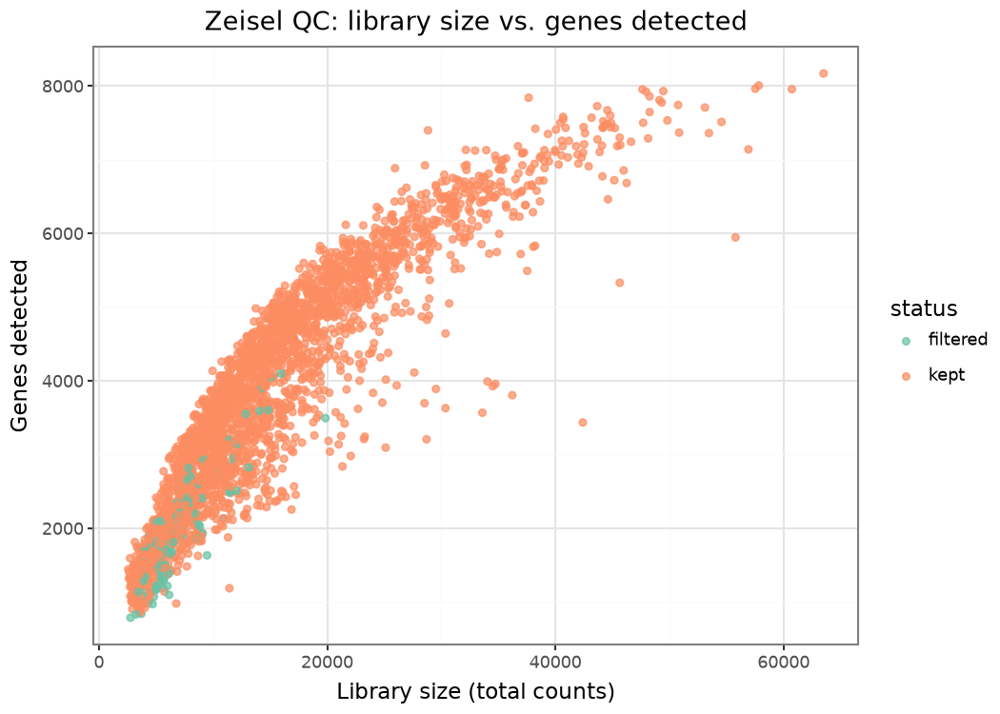
4. Filtering, normalization, and size factors
filtered = sce[:, keep]
cd = filtered.column_data
for col in ("sum", "detected", "subset_proportion.mito"):
cd = cd.set_column(col, qc_df.loc[keep, col].to_numpy())
filtered = filtered.set_column_data(cd)We pass the QC-derived library sizes explicitly as size factors, following the normalize_rna_counts_se interface. This also avoids a sparse-matrix shape issue in the installed scranpy version’s default path:
size_factors = qc_df.loc[keep, "sum"].to_numpy()
normed = scranpy.normalize_rna_counts_se(filtered, assay_type="counts", size_factors=size_factors)
normed.get_assay_names()['counts', 'logcounts']5. Variance modelling and highly variable genes
hvg_out = scranpy.choose_rna_hvgs_se(normed, assay_type="logcounts", top=4000)
hvg_out.get_row_data().get_column_names()Names(['featureType', 'mean', 'variance', 'fitted', 'residual', 'hvg'])hvg_df = hvg_out.get_row_data().to_pandas()
# pandas treats a bool column as numeric, which would otherwise route this
# straight into plot_coldata's continuous-color branch - map to a category
# label explicitly so it's treated (and legended) as discrete.
hvg_df["HVG status"] = hvg_df["hvg"].map({True: "highly variable", False: "other"})
(
gg.plot_coldata(hvg_df, x="mean", y="variance", color_by="HVG status")
+ labs(title="Mean-variance trend and chosen HVGs (scranpy)", x="Mean log-expression", y="Variance")
+ theme_bw()
)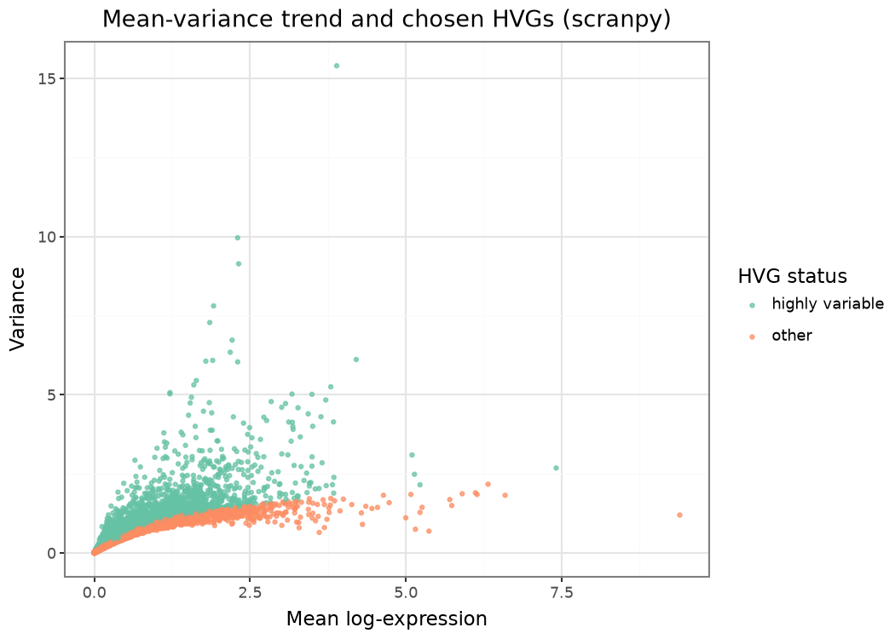
6. PCA
hvg_flags = hvg_out.get_row_data().get_column("hvg")
pca_out = scranpy.run_pca_se(hvg_out, features=hvg_flags, number=25, assay_type="logcounts")
pca_out.get_reduced_dim_names()['PCA']7. Nearest-neighbor graph, clustering, and UMAP
run_all_neighbor_steps_se builds the shared-nearest-neighbor graph, runs graph-based (Leiden/Louvain-style multilevel) clustering, and computes both UMAP and t-SNE embeddings in one call:
final = scranpy.run_all_neighbor_steps_se(pca_out, reddim_type="PCA")
final.get_reduced_dim_names()['PCA', 'TSNE', 'UMAP']final.get_column_data().get_column_names()Names(['tissue', 'group #', 'total mRNA mol', 'well', 'sex', 'age', 'diameter', 'level1class', 'level2class', 'sum', 'detected', 'subset_proportion.mito', 'size_factor', 'clusters'])n_clusters = len(set(final.column_data.get_column("clusters")))
f"{n_clusters} graph-based clusters"'14 graph-based clusters'run_scranpy_pipeline_on_zeisel() caches the processed SCE for later examples:
from data import run_scranpy_pipeline_on_zeisel
final = run_scranpy_pipeline_on_zeisel()8. Plotting PCA and UMAP
The same plot_pca and plot_umap functions can colour cells by cluster, the supplied cell-class annotation, a QC metric, or expression of a selected gene. The SCE adapter retrieves coordinates, annotations, and assays from their corresponding slots.
gg.plot_pca(final, color="clusters") + labs(title="PCA, colored by graph cluster")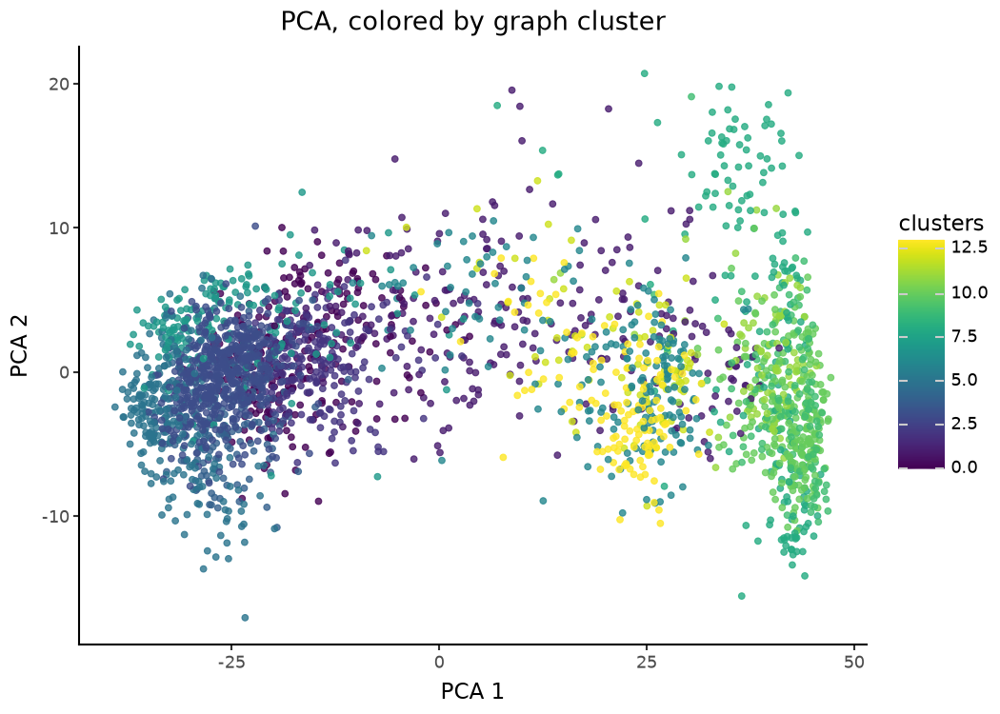
gg.plot_umap(final, color="level1class") + labs(title="UMAP, colored by the original level1class annotation")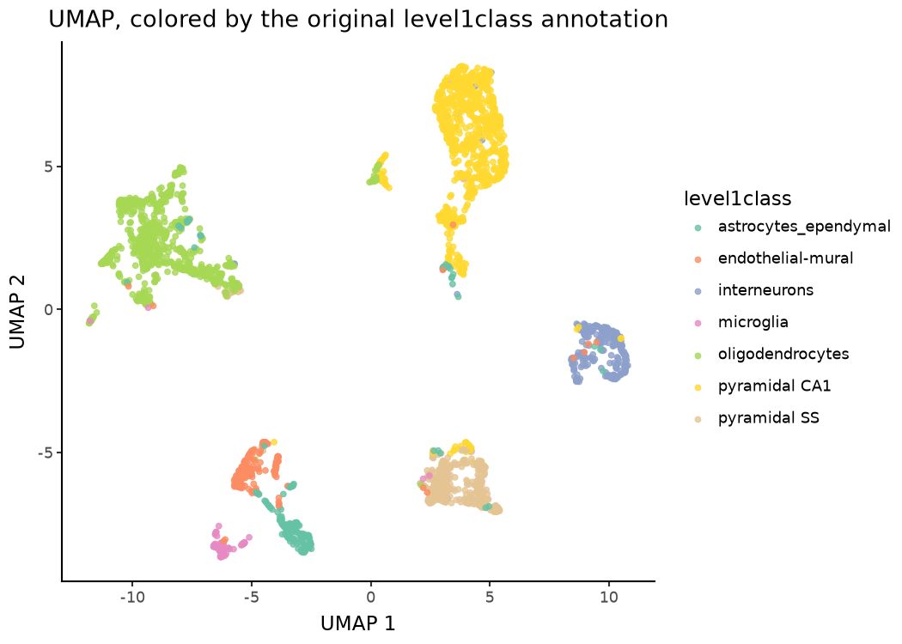
gg.plot_umap(final, color="subset_proportion.mito") + scale_color_gradient(low="#dddddd", high="#B2182B") + labs(title="UMAP, colored by mitochondrial proportion")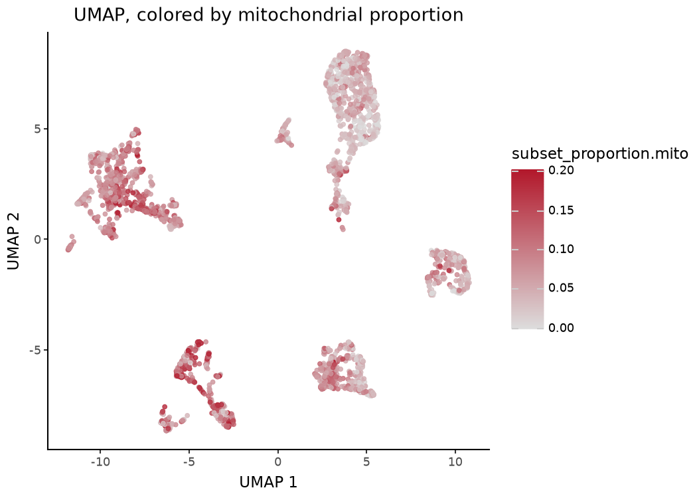
gg.plot_umap(final, color="Gad2", layer="logcounts") + labs(title="UMAP, colored by Gad2 (interneuron marker) expression")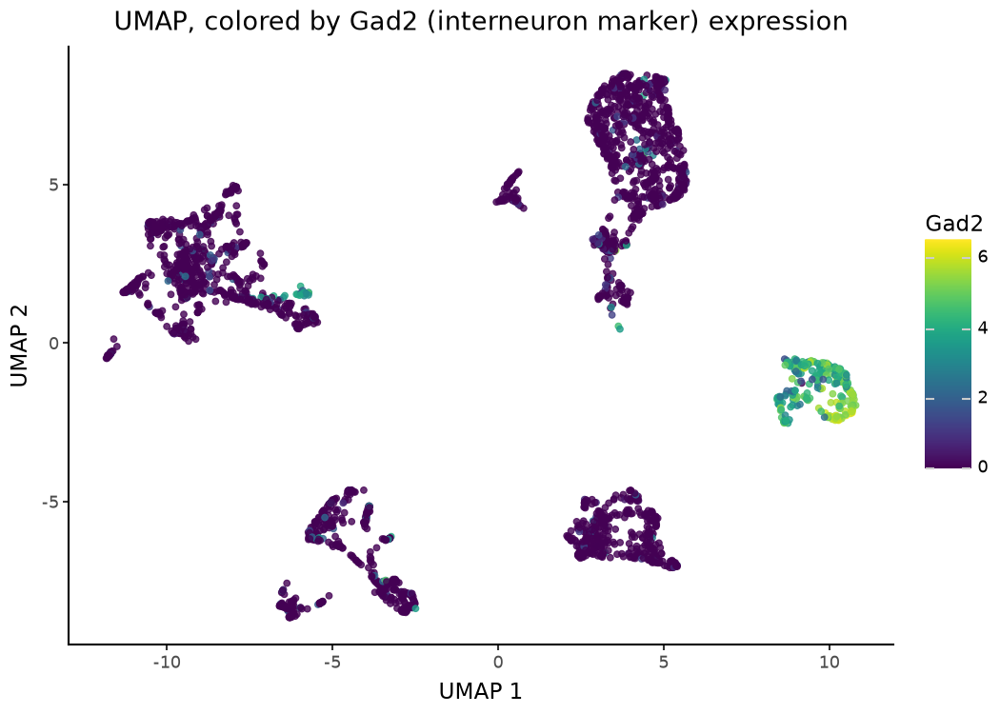
Point-order control
order= draws selected categories last, which keeps small populations visible in dense embeddings:
gg.plot_umap(final, color="level1class", order=["microglia", "endothelial-mural"]) + labs(title="UMAP with microglia/endothelial-mural drawn on top")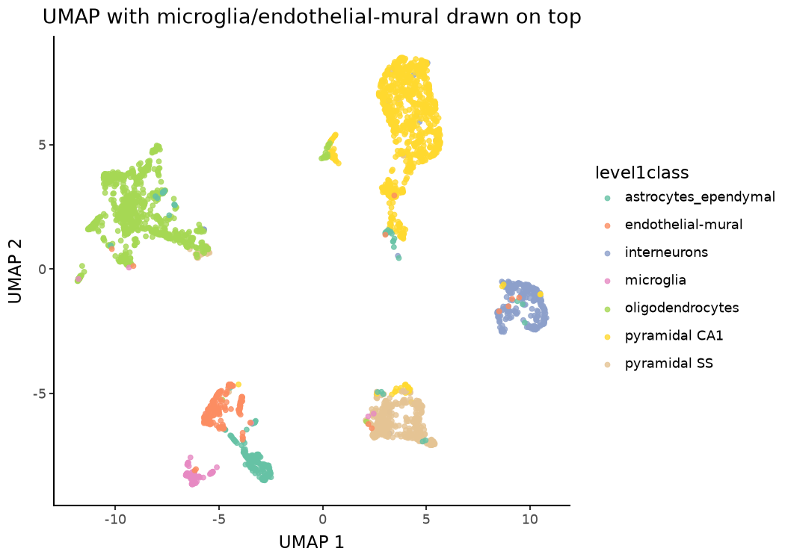
Faceting
Use facet_by= when splitting an embedding by a metadata field. The plotting frame built by plot_umap contains only the coordinates and requested annotations, so a post-hoc facet_wrap() cannot refer to other SCE columns.
gg.plot_umap(final, color="clusters", facet_by="level1class") + theme_bw() + theme(legend_position="none")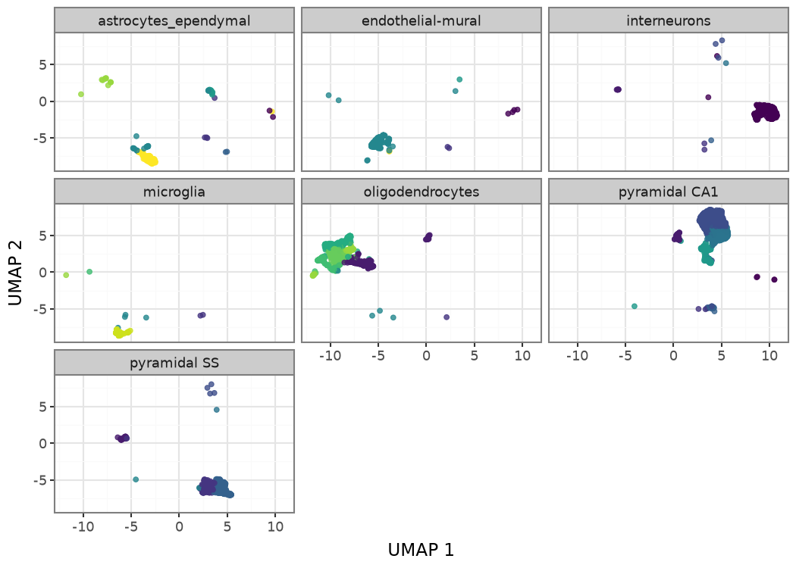
9. Descriptive comparison to the original annotation
The graph-based clusters were calculated without using Zeisel’s curated level1class or level2class labels. A cross-tabulation provides a useful descriptive comparison, although it is not a formal measure of clustering accuracy:
cd = final.column_data.to_pandas()
comparison = pd.crosstab(cd["clusters"], cd["level1class"])
comparison| level1class | astrocytes_ependymal | endothelial-mural | interneurons | microglia | oligodendrocytes | pyramidal CA1 | pyramidal SS |
|---|---|---|---|---|---|---|---|
| clusters | |||||||
| 0 | 2 | 4 | 276 | 0 | 0 | 4 | 0 |
| 1 | 0 | 0 | 7 | 0 | 163 | 44 | 33 |
| 2 | 4 | 2 | 2 | 2 | 1 | 2 | 187 |
| 3 | 0 | 0 | 3 | 0 | 0 | 479 | 4 |
| 4 | 2 | 0 | 1 | 0 | 0 | 17 | 170 |
| 5 | 0 | 0 | 1 | 0 | 0 | 235 | 1 |
| 6 | 25 | 168 | 0 | 4 | 4 | 0 | 2 |
| 7 | 11 | 1 | 0 | 0 | 0 | 157 | 0 |
| 8 | 0 | 0 | 0 | 0 | 189 | 0 | 0 |
| 9 | 0 | 0 | 0 | 1 | 125 | 0 | 0 |
| 10 | 0 | 0 | 0 | 0 | 239 | 0 | 0 |
| 11 | 11 | 0 | 0 | 1 | 75 | 0 | 0 |
| 12 | 0 | 0 | 0 | 80 | 0 | 0 | 0 |
| 13 | 132 | 2 | 0 | 1 | 0 | 0 | 0 |
gg.plot_abundance(cd, group_by="clusters", color_by="level1class") + labs(
title="Composition of each graph cluster by original cell-class label",
x="Graph cluster", y="Fraction of cells",
)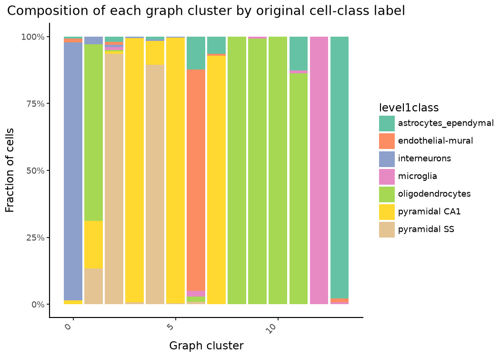
Several clusters are dominated by a single broad class, including oligodendrocyte- and astrocyte-rich clusters. Larger classes such as pyramidal neurons are distributed across several clusters, reflecting variation below the broad level1class annotation.
10. Expression violins and dot plots
markers = ["Gfap", "Mog", "Gad2", "Snap25", "Aif1", "Cldn5"]
gg.plot_expression(final, features=markers, group_by="level1class", layer="logcounts", log1p=False, ncol=2) + theme_bw() + theme(axis_text_x=element_text(rotation=45, hjust=1))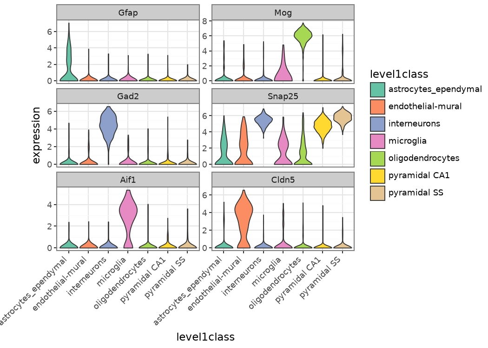
gg.plot_dot(final, features=markers, group_by="level1class", layer="logcounts") + theme_bw() + theme(axis_text_x=element_text(rotation=45, hjust=1))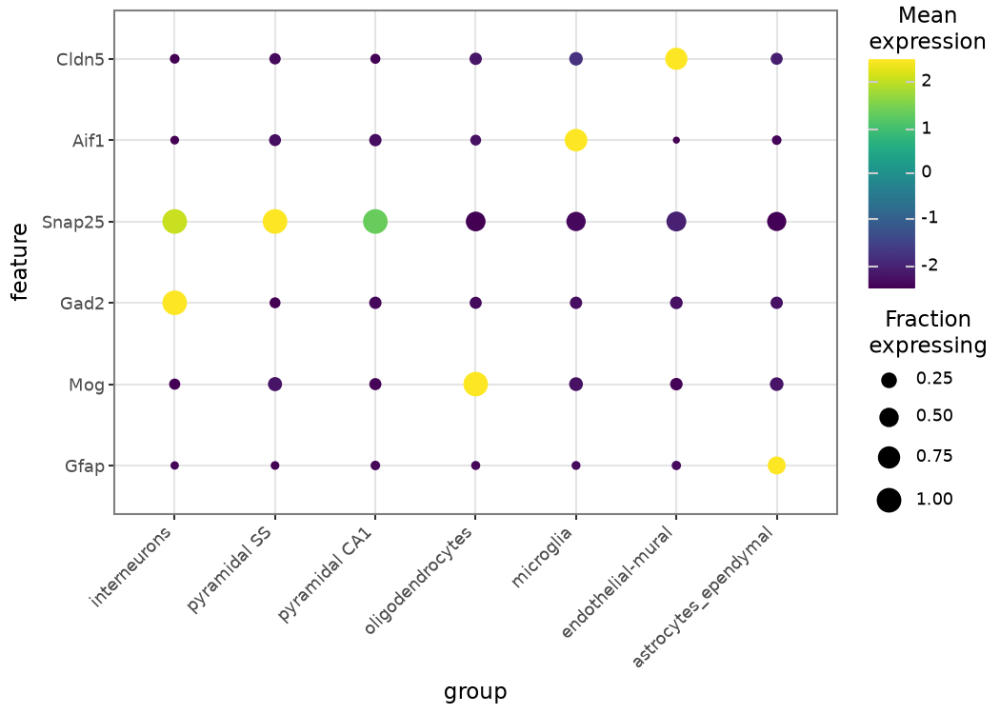
11. Heatmap
gg.plot_heatmap(final, features=markers, group_by="clusters", layer="logcounts", cluster_rows=True, cluster_cols=True)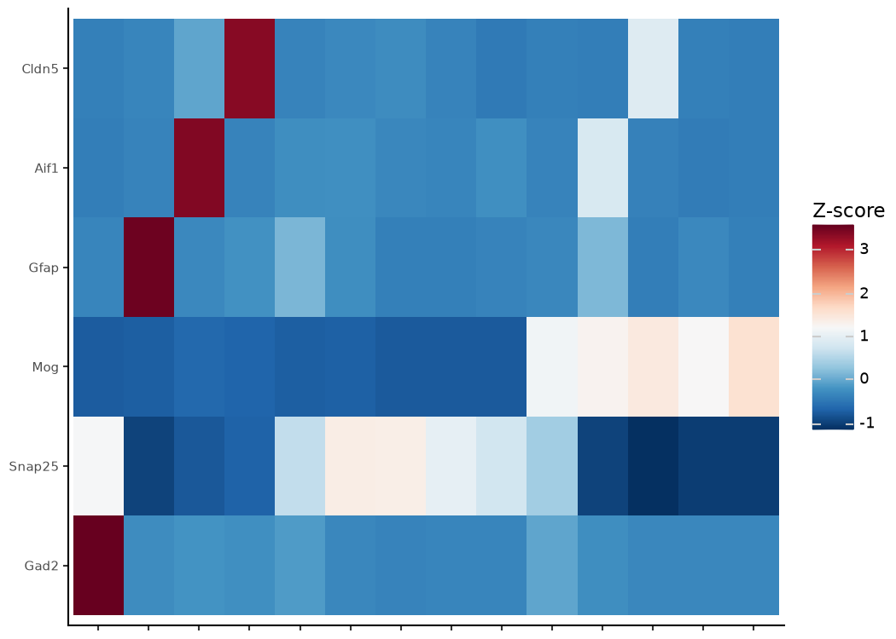
12. Converting to AnnData and reproducing the UMAP
In the installed versions, PCA metadata are stored as a biocutils.NamedList, whereas .to_anndata() expects a mutable mapping for AnnData’s .uns. The UMAP plot does not require those PCA metadata, so we omit them during conversion:
final_for_export = final.set_metadata({})
adata, _alt = final_for_export.to_anndata()
adata.X = adata.layers["logcounts"]
gg.plot_umap(adata, color="level1class") + labs(title="Same UMAP, plotted from the converted AnnData")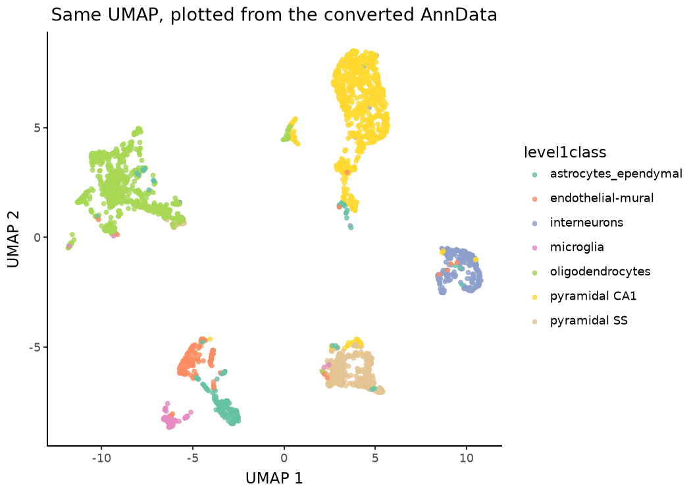
13. A custom plotnine extension
The returned UMAP can be extended with ordinary plotnine components. Here we fix the aspect ratio and add a caption from values calculated above:
gg.plot_umap(final, color="clusters") + coord_fixed() + labs(
caption=f"{n_clusters} clusters, {final.shape[1]} cells passing QC out of {sce.shape[1]} total"
) + theme_bw()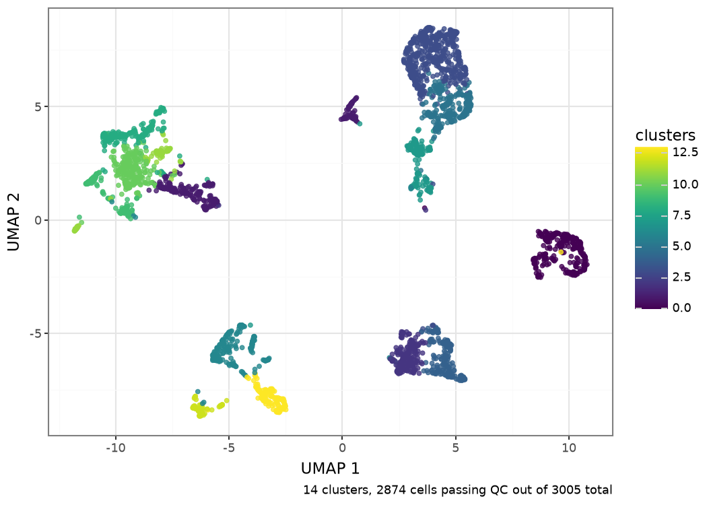
Next
- Bulk RNA-seq for PyDESeq2-based differential expression.
- Multimodal for RNA/ADT CITE-seq data.
- Specialized plots uses the processed Zeisel object for statistics, significance brackets, and palette examples.